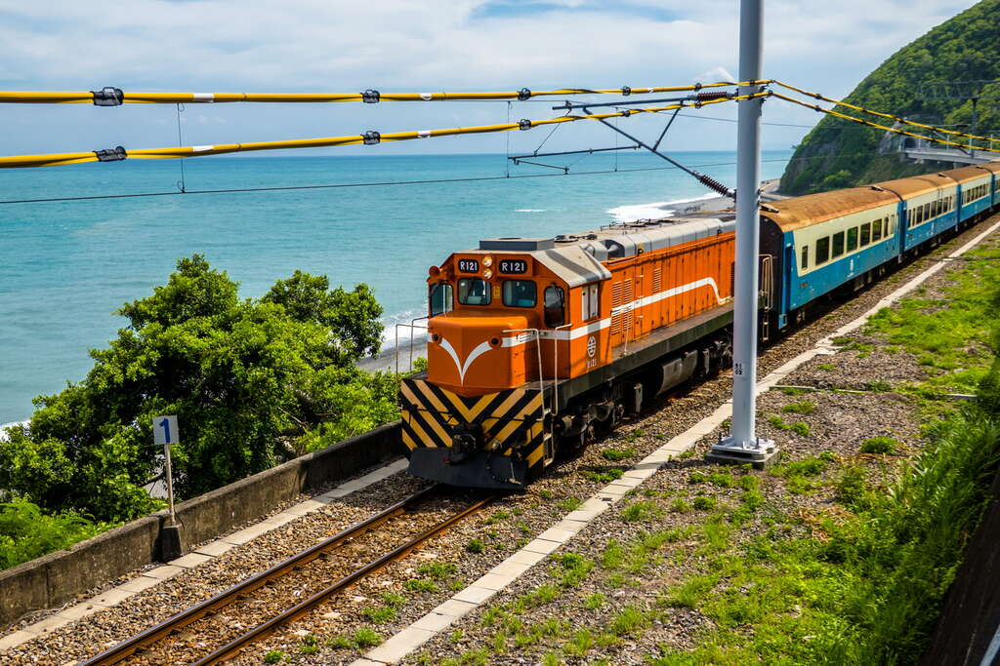
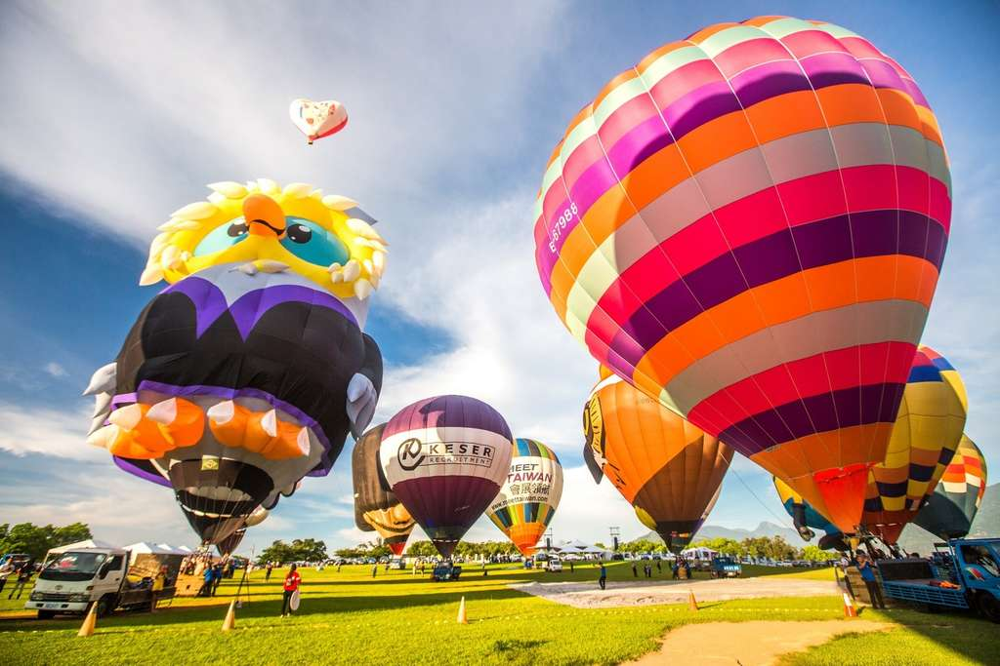
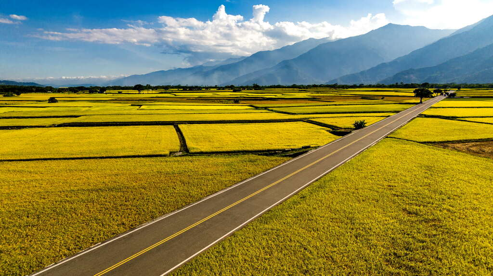

多良火車站
多良車站位於台東縣太麻里，原為排灣族「打腊打蘭社」所在地，日治時期更名為「多多良」，可愛的名稱讓人會心一笑。在南迴鐵路設站時，將地名簡化為「多良」。
多良車站原本是山坡地，兩端均為隧道，車站特別將屋頂改為觀景台，站上月台即可眺望一整片蔚藍，山脈側臥在一旁，山海交織的景色令人心曠神怡。
沿著指示走進園區，上二樓景觀高台，看著火車穿越山脈，閉上眼深呼吸，感受海天一色的美麗風景，來自大自然的寧靜祥和，
無疑是人生一大享受！也難怪多良車站擁有「全台最美車站」的美稱，成為台東旅行的熱門景點。
走下景觀台，轉往鄰近的商圈，沿途市集販售特色小物，琳瑯滿目讓人愛不釋手；品嚐原住民美食，無論是馬告香腸、烤山豬肉，都讓人吮指回味，
再配上一杯新鮮爽口的椰子水，圓滿了整個旅程！傍晚不妨散步走回車站，迎著微微海風，落日餘暉映照在海面上，構成一幅絕美的畫面。
開放時間：全日開放
地 址：臺東縣太麻里鄉多良村瀧溪路8-1號
服務專線：+886-8-9781301

多良火車站
鹿野高台
鹿野高台擁有絕佳視野，能夠一覽整個高台地區與卑南溪谷底的田野景色，也是臺灣東部一處優良的天然空域活動場地。每當6月至8月時，
正是鹿野高台進行熱氣球活動的好時機，搭乘緩緩升空起飛的熱氣球，徜徉在花東縱谷的美景之中，親身體驗熱氣球起飛的這一份躍動。
從龍田村沿著指標一路往高台走，只見地勢逐漸升高，經過高台茶葉展示中心後不遠，
好大一片綠草如茵的寬廣草坡隨即映入眼簾，登上草坡最高處的高眺亭，整個高台地區與縱谷的景色，盡在眼前，一覽無遺。
每逢暑假期間，盛大舉辦的臺灣國際熱氣球嘉年華以及光雕音樂會，都吸引來自世界各地的旅人前來參加，熱氣球繫留體驗、
熱氣球自由飛行表演、絢麗燦爛的光雕音樂會，或是曙光光雕音樂會等活動，讓人永生難忘。
開放時間：全日開放
地 址：臺東縣鹿野鄉永安村高台路46號
服務專線：+886-8-9551637

鹿野高台
伯朗大道
筆直的伯朗大道正式名稱為錦新三號道路，全長約2.2公里，由於兩旁毫無電線桿，加上逢稻穗成熟時，道路兩旁無邊無際的金色稻穗隨風搖曳，
寧靜的田園景緻，被伯朗咖啡選中拍攝廣告，之後知名藝人代言的長榮航空亦來此取景，自此聲名大噪，將這條道路暱稱為「伯朗大道」。
在伯朗大道的中間，有一條S型的道路叫做萬新道路，在一望無際的稻田中騎進蜿蜒的田間小徑，重現了當時廣告主角騎車的片段，如此美麗的田園風景，依舊深深吸引各地遊客前來朝聖騎單車。
在伯朗大道上的一顆茄苳樹，為當時拍攝知名藝人奉茶的拍攝地。枝葉茂密、適合乘涼的奉茶樹(原金城武樹)，吸引許多追星族及遊客前往拍照留念。因伯朗大道平時為產業道路，供農民們務農時使用，前往造訪時請注意，不要任意踐踏農田及擋住務農車輛。
開放時間：全日開放
地 址：臺東縣池上鄉伯朗大道
服務專線：+886-8-9862041

伯朗大道